Powered by CiCi Games
Aero Client Features List
Below is a list of what makes Aero Client different from most clients.
Launcher
Aero Client's launcher is fully custom and designed to be easy to navigate with tips on how to use it's features.
Launching with Aero Client extremely quick and secure, meaning the client launches faster than any other client in some cases.
The launcher automatically updates the client, and many bug fixes are released each day.

Bug Fixes and Updates
Aero Client is updated daily, and bugs are usually fixed within a few minutes of them being reported.
Suggestion Implementation
The team at Aero Client listen to every one of the community's suggestions, and most are added into the client.
If we don't add something suggested from the community, we usually note them and add it in a later update.
Toxicity and Safety
Aero Client is safe and aims to be a non-toxic, and safe environment.
Aero Client has a toxicity filter for the chat to keep it a clean environment to bring the community back to what it once was, kind and neat.
Since most servers refuse to punish for toxicity, we punish for them. You are given 3 warns until you're temporarily muted until a restart of the client.
If you're muted multiple times you may be muted for longer preiods of time, or even permanently muted. This can easily be appealed by creating a ticket in the Discord.
Aero Client also blocks unsafe networks that have failed to keep information safe. This includes database leaks.
You may report networks by creating a ticket in our discord. We aim to keep everyone safe.
Networks may appeal these by creating a ticket in the Discord.
Main Menu
Aero Client's main menu has a now fresh look with a night themed panorama, a button to edit your mod menu, cosmetics, change Minecraft options, switch accounts, and change the language.

Mod Menu
Aero Client is different in many ways in terms of mod menu design.
Aero Client's mod menu looks a lot like CheatBreaker's, but with a twist: You're able to change the colors of it entirely.

Aero Client's mod menu also has a button to report bugs, as well as change cosmetics ingame.

Cosmetics
Aero Client has many different kinds of ways of giving users cosmetics. You can earn them from playing on the client, or through invite rewards in our Discord or being active in the Discord!
Aero Client's Cosmetics Menu is also different! You can choose from 15 different cosmetics on each page, making it easier for you to find the cosmetic you want to equip.

Mods
Despite being based off of CheatBreaker, Aero Client has many more mods added! They've been listed below.
Motion Blur is not a new mod, however it has been updated to be really smooth. Aero Client's Motion Blur does not constantly flicker when changing perspective. You are also able to change it's color for fine tuning blurs. You may see an example here.
Aero Client has had Pack Display for a few months now.
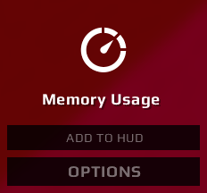 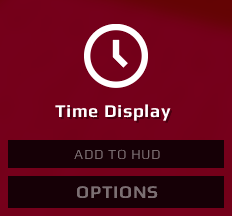 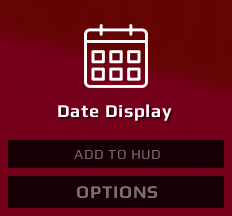 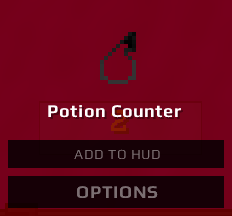 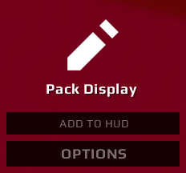
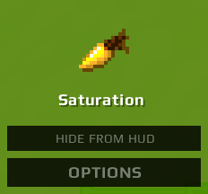
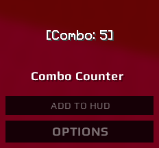
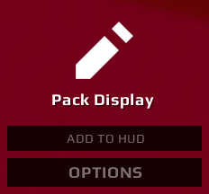
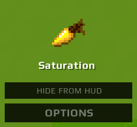
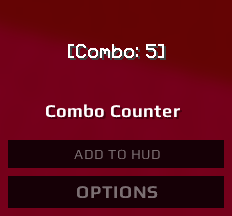
Mod Options & Customization
Aero Client's mods have a lot of customization, many of them can not be found on any other client.
The following options for all mods that can be found on Aero Client are listed below.
Corner Radius:
Make the mod backgrounds on your mods rounded! This can be found on the Keystrokes mod as well.
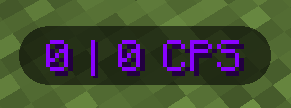
Corner Radius:
Change the width of your mod backgrounds!
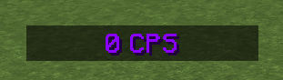
Outer Format:
You can make your mod text have Brackets, Parentheses, Braces, and Enclosures around your mods.
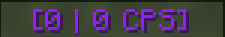
Text Case:
You can change the text casing on all your mods.
Remove Text:
You can remove the identifier of the mod you want to remove text from.
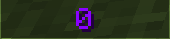
Text Shadow:
Toggle the text shadow on your mods..
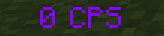
Reverse Text:
Reverse the text on your mods.
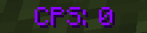
Show Decimal:
Show a decimal point on your mods.
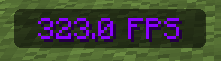
Show Zero Digit:
Show a zero in front of the value on your mods.
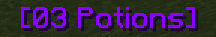
Notifications
Aero Client has notifications for HCF, and Practice.
Notifications will be sent to you by running popular commands used in HCF or Practice, these are completely toggleable.

Chat Emojis
Aero Client is currently in the process of implementing your favorite text emojis such as /shrug from Discord, and many others.
At the moment, when you type /shrug in chat, it will be replaced by ¯\_(ツ)_/¯.
Here is an example:

This is all we currently have to offer that's different from most clients! If you want to see more added, be sure to suggest it to us!
~ Aero Client Management